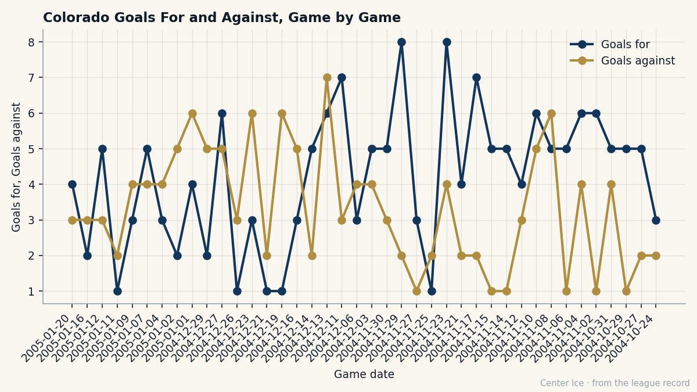

VAN
VANThe Boy from Örnsköldsvik Is 31, the Best Skater in the League, and Running Out of Rooms
Peter Forsberg's base grade of 97 is the highest the Bureau carries for any skater. He is doing it at 31, on $9.90M, with two years left, while Colorado goes 4-11-1 and asks him to carry a city that cannot finish.
 Carol BinghamFeatures writer · Rinkside
Carol BinghamFeatures writer · RinksideThe piece
 Peter Forsberg95 is the highest-rated skater in the league.
Peter Forsberg95 is the highest-rated skater in the league.  Marian Gaborik96 sits above him at 97 on the overall, but that number is a 91 with +6 from the Development Index. Forsberg's base grade, the Bureau's number with form stripped out, is 97. It is the ceiling for any skater on the Book this season.
Marian Gaborik96 sits above him at 97 on the overall, but that number is a 91 with +6 from the Development Index. Forsberg's base grade, the Bureau's number with form stripped out, is 97. It is the ceiling for any skater on the Book this season.
He is 31, making $9.90M a year with two years left. 87 points in 46 games, a pace of 155. Last season, the best of his career, he put up 101 in 82. His goals this year, 38 in 46, have already passed last year's 34. His assists, 49 in 46, are on pace to eclipse 67. He plays 20.6 minutes a night. And  Colorado Avalanche has gone 4-11-1 since December 16.
Colorado Avalanche has gone 4-11-1 since December 16.
What the Two Halves Say
Colorado Avalanche has played 46 games this season. Through December 14, they played 30. From my query of the game log, they earned at least one point in 26 of those 30 games. They scored 151 goals and gave up 87. They were, at that point, ahead of every team in the league.
From December 16 through last Friday, they played 16 more. A point in 5 of those. 46 goals scored, 66 against.

The goals-against line barely moves between the two stretches. The goals-for line falls off the rink. Forsberg told The Tunnel's Jan Kowalczyk after a 3-4 loss to  Mighty Ducks of Anaheim on January 9: "The legs, maybe. I think. We have played 42 games. And the games in November, December, the tight ones, the 2-1, the 3-2, the bounces... they go the other way now. We are not playing bad hockey. I do not think we are. But we are not winning those games anymore."
Mighty Ducks of Anaheim on January 9: "The legs, maybe. I think. We have played 42 games. And the games in November, December, the tight ones, the 2-1, the 3-2, the bounces... they go the other way now. We are not playing bad hockey. I do not think we are. But we are not winning those games anymore."
That is the most generous version. The legs, the bounces, the tight games breaking wrong. What the numbers add is this: in the first stretch, Colorado outscored its opponents by 64. In the second, it is being outscored by 20. The defense has not collapsed. The offense has switched off, and the only man on the roster whose individual production has not dropped is Forsberg.
The Grades Behind the Number
Forsberg's Book attributes read DEKG 99, PASS 99, HERO 99, PUCK 98, ACCU 95, SPEE 95. His lowest grade is FIGH at 50. He is the most intelligent player in the league at 205 pounds, with enough speed to beat a man cleanly and no interest in beating a man for the rest of the night. The Bureau's potential number sits at 61, which at 31 means the book is done with him. This is the whole product. The 97 base is what he is, and he is living in it right now.
His form is minus 1. Not a crash. A single degree. Even at 95 he is the top skater on the board by two points over  Jarome Iginla89 at 93. The man behind him among centers is
Jarome Iginla89 at 93. The man behind him among centers is  Vincent Lecavalier90 at 90. Forsberg is not in a statistical race with anyone his own age or younger. He is simply the best available, at 31, in year eleven of a career that started with his father on the bench.
Vincent Lecavalier90 at 90. Forsberg is not in a statistical race with anyone his own age or younger. He is simply the best available, at 31, in year eleven of a career that started with his father on the bench.
Ten Days Apart
Forsberg was born July 20, 1973 in Örnsköldsvik, Sweden.  Markus Näslund85 was born ten days later, ten miles down the same coast. They played youth hockey on different teams, joined the Ångermanland all-star squad together at the TV-pucken in 1988, went to the same high school, and at 18 worked the same summer at an electrical company that employed Näslund's mother and Forsberg's father.
Markus Näslund85 was born ten days later, ten miles down the same coast. They played youth hockey on different teams, joined the Ångermanland all-star squad together at the TV-pucken in 1988, went to the same high school, and at 18 worked the same summer at an electrical company that employed Näslund's mother and Forsberg's father.
They are now both 31, both playing the best seasons they have played in the world, and neither has a Stanley Cup.
| Forsberg (COL) | Näslund (VAN) | |
|---|---|---|
| GP | 46 | 47 |
| Goals | 38 | 49 |
| Assists | 49 | 43 |
| Points | 87 | 92 |
| Pace | 155 | 161 |
| MPG | 20.6 | 20.0 |
| Book | 95 | 85 |
| Club payroll | $71.56M | $34.94M |
| Club points | 59 | 61 |
The table is the whole argument Forsberg cannot make. Näslund is three points ahead in the scoring race, a six-point pace better, and on a team two spots above Colorado in the standings. The Avalanche payroll is $71.56M. Vancouver's is $34.94M. Näslund's club is cheaper, better, and further ahead. Forsberg's base grade is 97. Näslund's is 85.
The one thing Forsberg has that Näslund does not is proximity. Last June, Colorado Avalanche played 24 playoff games, the deepest run in the league, and lost to  Toronto Maple Leafs in the Finals. Forsberg scored 18 goals and 40 points in those 24 games, fourth in the playoff scoring race. He has touched the Cup's shadow. Näslund, at 31, has not.
Toronto Maple Leafs in the Finals. Forsberg scored 18 goals and 40 points in those 24 games, fourth in the playoff scoring race. He has touched the Cup's shadow. Näslund, at 31, has not.
What the Trade Made
Forsberg was drafted sixth overall by  Philadelphia Flyers in 1991, the first European selected that June. He went to the Nordiques in the package for
Philadelphia Flyers in 1991, the first European selected that June. He went to the Nordiques in the package for  Eric Lindros87, a deal so lopsided in hindsight that it has become the founding myth of this franchise. Forsberg was not the headline. He was what the other club got for opening the box.
Eric Lindros87, a deal so lopsided in hindsight that it has become the founding myth of this franchise. Forsberg was not the headline. He was what the other club got for opening the box.
He went back to Sweden. Played three seasons for Modo. Won the Guldpucken and the Guldhjälmen in 1993 as the best player in the Elitserien, an award decided by the other players. Then he crossed the ocean and became the engine of a franchise that had already moved from Quebec to Denver by the time he arrived.
Lindros is 31 now, at  New York Rangers, with 81 points in 49 games and a 136 pace. Both halves of that trade are still in the league. Both are 31. Forsberg has six more points in three fewer games.
New York Rangers, with 81 points in 49 games and a 136 pace. Both halves of that trade are still in the league. Both are 31. Forsberg has six more points in three fewer games.

The Two Years Left
Forsberg told Kowalczyk that he would give back his two-point night to get the game back. That is a man who has decided the individual number means nothing if the room won't follow it. He has 46 games of a 155 pace. If he holds it, he finishes well past 101, the season he thought was his ceiling.
But the pace is not the point. Colorado Avalanche is 25-15-3, 59 points, 197 goals for, 153 against, sitting third in the league on a pace of 105.2 points per 82. That gets them into the playoffs. It does not get them back to the Finals. The 4-11-1 stretch, the 20-goal differential against them across 16 games, the 46 goals scored where they scored 151 in 30 before: that is a team whose engine is running and whose transmission is slipping.
Forsberg's contract has two years left at $9.90M. He is 31 with a potential of 61 and a base of 97. The next two seasons are all there is between the man he is and the man with a Cup in his case. He has 36 games left to answer it in this one. The room in Denver knows who the best skater in the league is. Whether the room can be a Stanley Cup team by June is the question his grades cannot answer.
"I would give both back for the 2 points," he told The Tunnel. The 2 points are what this team runs on now. Forsberg has enough to spare.